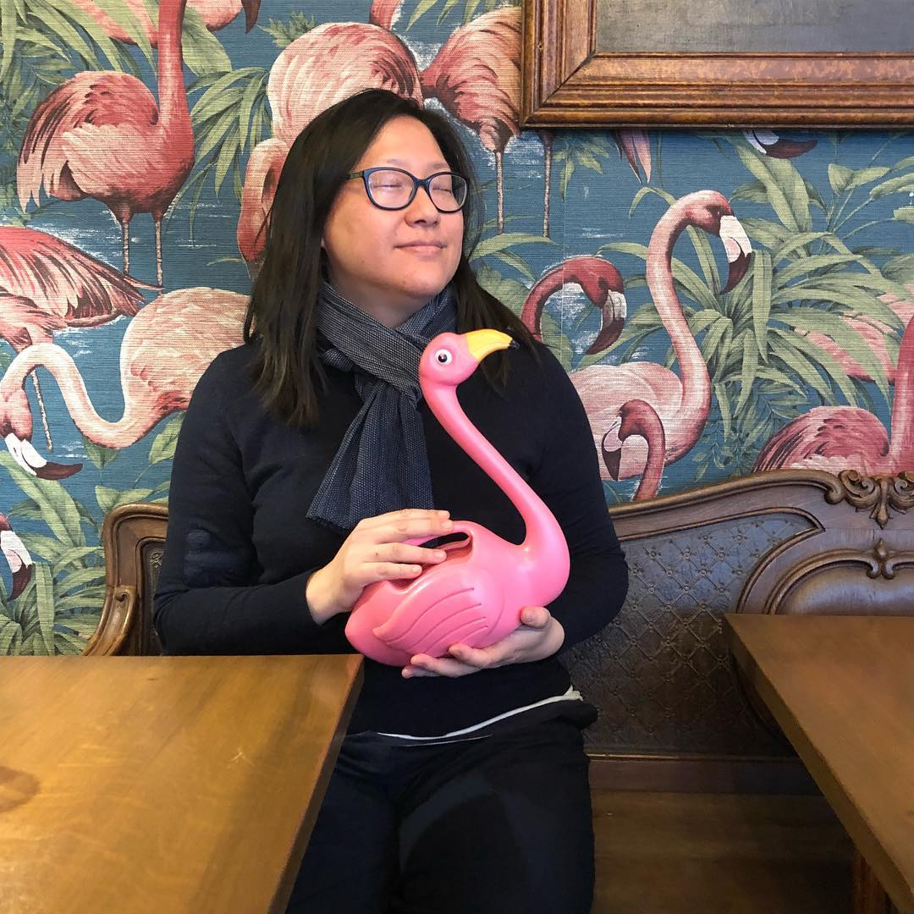

Christelle Pécout - Auriculaire le podcast
Épisode publié le 1er mai 2018
J’ai rencontré Christelle Pécout à plusieurs reprises, à Paris, à Angoulême… mais c’est finalement
à la librairie Violette & co lors d’une dédicace de « Féministes » (Vide Cocagne, 2018)
que nous avons enfin enregistré l’interview que vous allez entendre !
Christelle a publié son premier album en 2004 dans la série « Lune d’ombre » (Les Humanoïdes associés)
et s’est toujours attachée à faire vivre des personnages féminins forts et en dehors des stéréotypes
dans les albums qu’elle a réalisés depuis. Elle a récemment publié « K-Shock » (Glénat, 2016),
album dans lequel elle raconte l’histoire d’Alice, une jeune française, qui vient vivre sa passion
pour la K-pop à Séoul et a également participé au recueil « Féministes » ou elle illustre les stéréotypes
et injonctions appliqués aux femmes asiatiques. Christelle est très engagée dans la défense des droits
des autrices et auteurs, et asio-militante.
Nous avons parlé de son engagement féministe, de la Corée et de ses albums à venir.
La librairie Violette & co dans laquelle nous avons enregistré l'interview se trouve au 102, Rue de Charonne, dans le 11ème arrondissement de Paris et propose des essais, fictions et revues sur le féminisme, l'homosexualité et les questions de genre.
La librairie Violette & co dans laquelle nous avons enregistré l'interview se trouve au 102, Rue de Charonne, dans le 11ème arrondissement de Paris et propose des essais, fictions et revues sur le féminisme, l'homosexualité et les questions de genre.